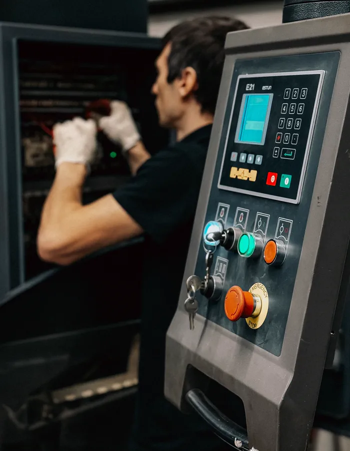
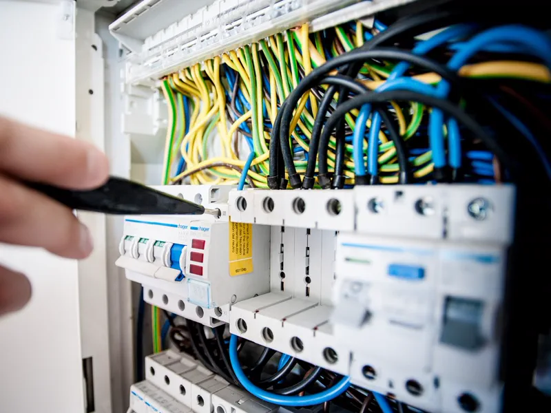

Por que ninguém responde "quanto custa" por telefone
Esta página trata só do custo: o que forma o preço de adequar uma máquina à NR-12 e como comparar propostas. Como o serviço é executado na prática, etapa por etapa, está na página de adequação de máquinas à NR-12 em Vitória; o que é e como se faz a análise que antecede tudo está em apreciação de riscos: o que é.
Quem pesquisa o preço de adequação NR-12 quer um número por máquina. O problema é que "uma máquina" pode ser uma furadeira de coluna com uma única zona de perigo, resolvida com proteção fixa e parada de emergência, ou uma prensa com alimentação manual, que exige proteção frontal por cortina de luz, comando com monitoramento redundante e medição do tempo de parada. As duas entram na mesma linha do inventário e têm custos que não se comparam.
Preço fechado sem ver a máquina costuma virar aditivo no meio da obra ou, pior, uma proteção instalada que não atende à categoria exigida e precisa ser refeita. O caminho honesto é o mesmo que vale para o custo de uma inspeção NR-13: identificar o equipamento, definir o escopo técnico e só então precificar.

As etapas que formam o custo da adequação
Uma proposta completa de adequação NR-12 cobre, em maior ou menor grau, as etapas abaixo. Nem toda máquina precisa de todas, mas é por esta lista que se descobre o que está faltando em um orçamento.
Inventário e apreciação de riscos
Tudo começa pelo levantamento das máquinas e pela apreciação de riscos de cada uma: identificar as zonas de perigo, estimar e avaliar o risco e decidir o que precisa de medida de proteção. O esforço cresce com o número de máquinas e, principalmente, com o número de zonas de perigo por máquina — uma injetora tem mais pontos a analisar que um esmeril. É a etapa mais barata do processo e a que mais economiza nas seguintes, porque evita comprar proteção onde não precisa e deixar de proteger onde precisa. Se ainda não está claro o que ela entrega, leia o que é apreciação de riscos de máquinas.
Projeto, especificação e ART
Com os riscos definidos, vem o projeto: desenho das proteções, especificação dos componentes de segurança, diagrama do circuito de comando e cálculo de distâncias de segurança. Projeto mecânico e elétrico assinado por profissional legalmente habilitado, com ART registrada no CREA, é o que separa adequação de improviso de serralheria. Em parque com várias máquinas do mesmo modelo, o projeto é feito uma vez e replicado.
Proteções fixas e móveis com intertravamento
É a parte mais visível do orçamento. Proteção fixa — chapa, tela ou grade presa com fixação que exige ferramenta para remover — resolve zonas de perigo que não precisam de acesso frequente. Onde o operador precisa abrir a proteção durante a produção ou o setup, entra a proteção móvel intertravada, com chave de segurança e, conforme a análise, bloqueio que só libera a abertura após a parada do movimento. O custo depende da área a enclausurar, do material, da necessidade de visualização do processo e do número de portas intertravadas.
Cortina de luz, scanner de área e outros dispositivos
Quando a zona de perigo precisa ficar acessível a cada ciclo — alimentação manual de prensa, dobradeira, algumas linhas de envase — a proteção física dá lugar a dispositivos de detecção: cortina de luz, scanner a laser de área, tapete de segurança ou comando bimanual. Esses dispositivos só protegem se estiverem à distância correta do perigo, e essa distância é calculada a partir do tempo total de parada da máquina. Por isso a medição do tempo de parada entra no escopo, e máquina com freio ou embreagem desgastados pode exigir intervenção mecânica antes de o dispositivo fazer sentido.
Relé ou CLP de segurança conforme a categoria
O item que mais gera divergência entre propostas. A apreciação de riscos define a categoria de segurança do sistema de comando pela ABNT NBR 14153 (B, 1, 2, 3 ou 4), ou o nível de desempenho (PL) pela ISO 13849-1. Categorias baixas podem ser atendidas com componentes bem aplicados; categorias altas exigem redundância, monitoramento e autodiagnóstico — tipicamente relé de segurança com canal duplo ou, quando há muitas funções de segurança, CLP de segurança. Proposta que não declara a categoria adotada não pode ser comparada com outra que declara.
Parada de emergência
Botões de parada de emergência em quantidade e posição que permitam o acionamento de cada posto de trabalho, ligados a um circuito que efetivamente interrompa o movimento perigoso e só permita a partida após rearme consciente. Em máquinas longas, como transportadores, entram cabos de emergência ao longo do percurso. É um item de custo moderado, mas que muitas vezes puxa a revisão do circuito de comando inteiro.
Adequação do painel elétrico (NR-10)
Não existe adequação NR-12 com painel fora de condição. Barramento exposto, ausência de dispositivo de seccionamento com bloqueio, falta de aterramento e ausência de diagrama elétrico aparecem com frequência e entram no orçamento como adequação do painel, sob as exigências da NR-10. Painel muito antigo, sem espaço para os novos componentes de segurança, pode precisar ser substituído em vez de adaptado.
Sinalização, manuais e procedimentos
Sinalização de segurança na máquina, manual de instruções e procedimentos de trabalho e de manutenção. Máquina sem manual do fabricante exige que ele seja reconstituído por profissional habilitado, com base na máquina real — o que é trabalho de engenharia e tem custo próprio, frequentemente esquecido na proposta.
Capacitação
Operadores e pessoal de manutenção precisam ser capacitados para trabalhar com a máquina adequada: o que mudou, como funcionam os dispositivos de segurança e o que não pode ser feito. O custo depende do número de pessoas, de turnos e de quantas máquinas diferentes entram no treinamento.
Validação e laudo final
Instaladas as medidas, as funções de segurança são testadas, o tempo de parada é medido de novo quando aplicável e o risco é reavaliado para confirmar que o risco residual ficou aceitável. Só então sai o laudo de conformidade NR-12, assinado com ART. Sem validação, a proteção instalada é só uma peça na máquina: não há como provar que ela cumpre a função.
O custo que não aparece na proposta: máquina parada
Toda adequação exige a máquina parada para montagem das proteções, alteração do comando, testes e validação. Esse tempo não costuma estar no orçamento do fornecedor, mas está na conta da produção — e em máquina gargalo pode pesar mais que a própria adequação.
Três perguntas mudam esse custo: a montagem pode ser feita em parada programada ou fim de semana? As proteções podem ser pré-fabricadas fora da máquina a partir do levantamento dimensional, reduzindo o tempo de instalação? O painel novo pode ser montado e testado em bancada antes da troca? Uma proposta bem feita informa o tempo estimado de máquina parada por equipamento, para que a produção se programe.

O que encarece a adequação de máquinas
Máquina antiga e sem documentação
Sem manual, sem diagrama elétrico e sem informação do fabricante, cada decisão de projeto começa com levantamento em campo. Soma-se a isso o desgaste mecânico: freio e embreagem que não garantem parada repetível, folgas que inviabilizam intertravamento confiável e painel sem espaço para os novos componentes. Muitas vezes o custo da documentação e dos reparos prévios supera o das proteções.
Categoria de segurança alta
Quanto maior a gravidade do dano possível, a frequência de exposição e a dificuldade de evitar o acidente, maior a categoria exigida — e mais componentes com redundância e monitoramento entram no comando. Prensas, guilhotinas e máquinas com alimentação manual próxima ao ponto de operação estão tipicamente nesse grupo.
Integração com automação existente
Linhas com CLP de processo, inversores, robôs ou várias máquinas interligadas exigem que as funções de segurança conversem com a automação sem que um defeito no programa de produção anule a proteção. Isso envolve revisão de lógica, integração com o fornecedor da automação e testes mais longos. É a situação em que a adequação se aproxima de um projeto de montagem industrial, com cronograma próprio.
Acesso, prazo e condição de campo
Máquina em área de difícil acesso, trabalho restrito a paradas curtas, exigência de integração de segurança do contratante e prazo imposto por notificação da fiscalização também pesam, porque comprimem o cronograma e aumentam a mobilização.
O que barateia sem perder segurança
- Priorizar por risco. Com a apreciação de riscos feita para o parque inteiro, a adequação pode ser escalonada: primeiro as máquinas com risco mais alto, depois as demais, dentro de um plano de ação com prazo. O desembolso se distribui sem deixar o risco maior para depois.
- Padronizar soluções entre máquinas iguais. Três tornos do mesmo modelo não precisam de três projetos. Um projeto validado, replicado com a mesma especificação de componentes, reduz engenharia, compra e treinamento.
- Fazer em lote. Mobilização, levantamento, compra de componentes e capacitação diluem melhor quando várias máquinas entram na mesma frente de trabalho — e o laudo de conformidade pode sair organizado por setor.
- Aproveitar o que já existe. Proteções e componentes em bom estado, compatíveis com a categoria exigida, podem ser mantidos. Só a apreciação de riscos diz com segurança o que pode ficar.
- Casar com paradas programadas. Montar na parada de manutenção reduz o custo de máquina parada, que muitas vezes é o maior da conta.
Nada disso é economia na proteção em si. Trocar cortina de luz por proteção fixa onde o processo exige acesso a cada ciclo, ou relé de segurança por contator comum onde a categoria pede redundância, não barateia: transfere o custo para o dia do acidente ou da fiscalização.
Como pedir um orçamento de adequação NR-12 comparável
A maior parte das diferenças de preço entre propostas vem de escopos diferentes, não de margens diferentes. Para receber propostas que dá para comparar, envie o mesmo pacote de informação a todos os fornecedores:
- Lista das máquinas com tipo, fabricante, modelo, ano e número de série, quando houver — e quantas unidades iguais existem.
- Fotos de cada máquina: vista geral, ponto de operação, acessos laterais e traseiros, painel elétrico aberto e placa de identificação.
- Vídeo curto do ciclo de trabalho, mostrando como o operador alimenta e retira a peça.
- Documentação existente: manual, diagrama elétrico, apreciação de riscos ou laudo anterior, se houver.
- Número de operadores e turnos por máquina, para dimensionar a capacitação.
- Janelas de parada disponíveis e eventual prazo imposto por notificação ou auditoria de cliente.
- Automação existente: se a máquina tem CLP, inversor ou está interligada a outras.
E peça que a proposta discrimine, item por item: apreciação de riscos, projeto, categoria de segurança adotada, componentes com marca e certificação, adequação do painel, sinalização e manual, capacitação, validação, laudo com ART e tempo estimado de máquina parada. O que não estiver escrito não está incluído.
Compare a categoria antes do preço. Uma proposta que adota categoria 1 e outra que adota categoria 3 para a mesma prensa não são duas ofertas do mesmo serviço. Se as categorias divergem, peça a apreciação de riscos que justifica cada uma — é ela que decide, não o orçamento.
O custo de não adequar
O custo de adequar é conhecido e pode ser planejado. O de não adequar aparece de uma vez, sem data marcada:
- Interdição. Máquina em condição de risco grave e iminente pode ser interditada pela fiscalização do trabalho, com base na NR-3. A produção daquela máquina para até a correção, agora com prazo imposto por terceiros e sem margem de negociação com fornecedor.
- Autuação. Cada não conformidade constatada pode gerar auto de infração, e a ausência de documentos — inventário, apreciação de riscos, capacitação — conta tanto quanto a falta de proteção.
- Acidente. Acidentes com máquinas costumam envolver mãos e membros e produzir lesões graves e permanentes. Ao dano humano somam-se o afastamento, a investigação, a parada da linha e o impacto no restante da equipe.
- Passivo. Acidente com máquina fora da norma expõe a empresa a ações de indenização, a ação regressiva do INSS e à responsabilização de gestores. Esse passivo permanece por anos depois do fato.
- Contratos. Clientes com auditoria de fornecedores e seguradoras pedem evidência de conformidade. Não ter o laudo à mão pode custar um contrato.
Nenhum desses custos tem valor fixo que se possa colocar em uma planilha de comparação — e é justamente por isso que costumam ser subestimados até acontecerem.
Depois de adequada, a máquina precisa continuar adequada: proteção removida na manutenção e não recolocada, treinamento vencido e apreciação de riscos desatualizada depois de uma mudança de ferramental trazem o problema de volta. Controlar isso em pastas e planilhas soltas tem os mesmos limites descritos em por que a planilha de inspeção para de funcionar. O Sistema NR12 mantém inventário por TAG, apreciação de risco, categoria NBR 14153 e plano de ação com prazo, responsável, custo estimado e status por máquina, com alerta de treinamento a vencer.
Perguntas frequentes sobre o custo de adequação NR-12
Existe tabela de preço para adequação de máquina à NR-12?
Não existe tabela oficial. O custo depende do tipo de máquina, do número de zonas de perigo, da categoria de segurança exigida pela apreciação de riscos, do estado do painel elétrico, da documentação existente e do tempo que a máquina pode ficar parada. Duas prensas do mesmo modelo podem ter custos bem diferentes se uma já tem proteções e diagrama elétrico e a outra não tem nada.
Dá para orçar a adequação sem apreciação de riscos?
Dá para estimar uma faixa, mas não para fechar escopo. É a apreciação de riscos que define quais zonas de perigo precisam de proteção e qual categoria de segurança o comando exige. Orçamento de proteções feito antes dela costuma errar para mais, quando superdimensiona, ou para menos, quando depois descobre que a categoria pedia canal duplo e relé de segurança.
Por que um orçamento de adequação NR-12 sai muito mais barato que outro?
Quase sempre porque os escopos são diferentes. Um orçamento pode incluir apreciação de riscos, projeto, componentes de segurança certificados, adequação do painel, validação e laudo com ART; outro pode cobrir só a serralheria das proteções. Compare item por item: o que não está escrito na proposta tende a virar aditivo ou pendência na fiscalização.
Adequar máquina antiga compensa ou é melhor trocar?
Depende do estado mecânico da máquina e da categoria de segurança que ela exige. Quando a estrutura está boa e a adequação se resume a proteções, parada de emergência e ajustes no comando, adequar costuma ser o caminho. Quando o comando inteiro precisa ser refeito, falta toda a documentação e a máquina tem folgas que comprometem a parada, a comparação com uma máquina nova já conforme deve ser feita com números reais das duas propostas.
O laudo NR-12 com ART está incluído no preço da adequação?
Deveria estar, e a proposta precisa dizer isso por escrito. A adequação só se sustenta em fiscalização com apreciação de riscos, validação das funções de segurança e laudo assinado por profissional legalmente habilitado com ART registrada. A taxa da ART é recolhida ao CREA e pode vir embutida ou destacada, mas não pode estar ausente.
Precisa disso resolvido por engenharia habilitada?
A Axial Engenharia executa adequação de máquinas à NR-12 com apreciação de riscos, projeto, validação e laudo com ART registrada, atendendo presencialmente Vitória, Vila Velha, Serra, Cariacica, Viana, Guarapari e Fundão, com deslocamento programado para Anchieta, Aracruz e Linhares. Mande fotos da máquina e do painel pelo WhatsApp e o escopo volta no mesmo dia útil.